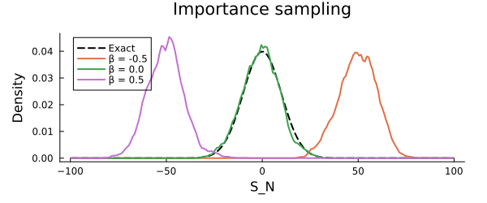
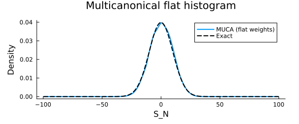
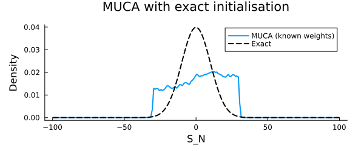
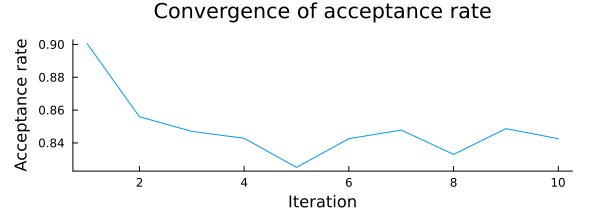
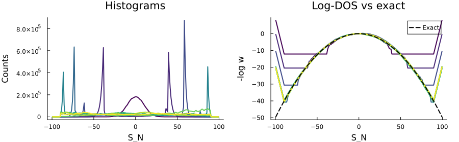
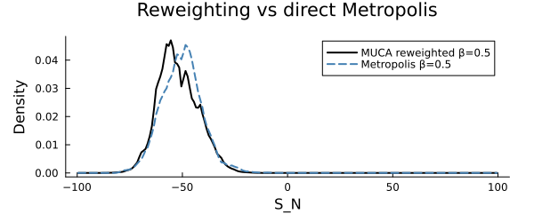

Large Deviation Theory: Sum of Gaussian Random Variables
Large deviation theory (LDT) describes the probability of observing rare, atypical fluctuations of macroscopic observables far from their mean. For a sum $S_N = \sum_{i=1}^N X_i$ of i.i.d. random variables, the central limit theorem governs typical fluctuations, but LDT governs the exponentially rare tails.
This example uses the sum of $N$ Gaussian random variables as a tractable benchmark — the exact distribution is known analytically — and demonstrates three sampling strategies:
- Direct sampling — reference
- Importance sampling via Metropolis with a biasing field $\beta$
- Multicanonical sampling — flat histogram across the full distribution
using Random, Distributions
using StatsBase, LinearAlgebra
using MonteCarloX
using Plots, ProgressMeterCI parameters
const CI_MODE = get(ENV, "MCX_SMOKE", get(ENV, "MCX_CI", "false")) == "true"
n_direct = CI_MODE ? 1_000 : 100_000
n_therm = CI_MODE ? 100 : 10_000
n_metro = CI_MODE ? 1_000 : 1_000_000
n_muca = CI_MODE ? 1_000 : 10_000_000
n_muca_known = CI_MODE ? 1_000 : 50_000_000
n_iter = CI_MODE ? 3 : 10
n_iter_steps = CI_MODE ? 1_000 : 5_000_0005000000Parameters
μ, σ, N = 0.0, 1.0, 100
# exact distribution of S_N is Normal(N*μ, sqrt(N)*σ)
pdf_sum = Normal(N*μ, sqrt(N)*σ)
std_sum = sqrt(N)*σ
bins_sum = (N*μ - 10*std_sum) : (std_sum/10) : (N*μ + 10*std_sum)
centers_sum = collect(bins_sum[1:end-1] .+ diff(collect(bins_sum))./2)
logpdf_sum = logpdf.(pdf_sum, centers_sum)200-element Vector{Float64}:
-52.72277362619871
-51.732773626198714
-50.75277362619872
-49.78277362619872
-48.822773626198725
-47.87277362619871
-46.93277362619872
-46.00277362619872
-45.08277362619872
-44.172773626198726
⋮
-45.08277362619872
-46.00277362619872
-46.93277362619872
-47.87277362619871
-48.822773626198725
-49.78277362619872
-50.75277362619872
-51.732773626198714
-52.72277362619871System definition
The system state is a vector of $N$ Gaussian random variables together with their running sum. Only the sum enters the sampling weight; the individual variables evolve under their own Gaussian prior via a Metropolis-within-Gibbs step.
mutable struct SumGaussianRVs
logpdf_rv :: Function
rvs :: Vector{Float64}
sum_rvs :: Float64
function SumGaussianRVs(rng, N; μ=0.0, σ=1.0)
dist = Normal(μ, σ)
rvs = rand(rng, dist, N)
new(x -> logpdf(dist, x), rvs, sum(rvs))
end
end
sum_rvs(sys::SumGaussianRVs) = sys.sum_rvssum_rvs (generic function with 1 method)Each update proposes a move for one randomly chosen variable. The proposal is first filtered by the Gaussian prior (Metropolis-within-Gibbs), then accepted by the sampling algorithm based on the sum.
function update!(sys::SumGaussianRVs, alg::AbstractImportanceSampling; δ=0.5)
idx = rand(alg.rng, 1:length(sys.rvs))
rv_old = sys.rvs[idx]
rv_new = rv_old + δ * (2*rand(alg.rng) - 1)
if rand(alg.rng) < exp(sys.logpdf_rv(rv_new) - sys.logpdf_rv(rv_old))
sum_new = sys.sum_rvs + (rv_new - rv_old)
if accept!(alg, sum_new, sys.sum_rvs)
sys.sum_rvs = sum_new
sys.rvs[idx] = rv_new
end
else
alg.steps += 1
end
endupdate! (generic function with 1 method)Direct sampling
We draw independent sums as a reference distribution.
direct_samples = [sum(μ .+ σ .* randn(MersenneTwister(i), N)) for i in 1:n_direct]
hist_direct = normalize(fit(Histogram, direct_samples, bins_sum); mode=:pdf)
plot(hist_direct; st=:bar, linewidth=0, alpha=0.6,
label="Direct samples", xlabel="S_N", ylabel="Density",
title="Direct sampling vs exact", size=(600, 250), margin=5Plots.mm)
plot!(centers_sum, pdf.(pdf_sum, centers_sum);
lw=2, color=:black, ls=:dash, label="Exact")Importance sampling with Metropolis
A biasing field $\beta$ tilts the sampling distribution toward larger ($\beta > 0$) or smaller ($\beta < 0$) values of $S_N$. At $\beta = 0$ this reduces to uniform sampling of the Gaussian.
function run_metropolis(; β=0.0)
sys = SumGaussianRVs(MersenneTwister(23), N; μ=μ, σ=σ)
alg = Metropolis(MersenneTwister(42); β=β)
meas = Measurements([:sum => sum_rvs => fit(Histogram, [], bins_sum)], interval=1)
for _ in 1:n_therm; update!(sys, alg); end
for i in 1:n_metro; update!(sys, alg); measure!(meas, sys, i); end
println("β = $(β): acceptance = ", round(acceptance_rate(alg); digits=3))
return meas
end
βs = [-0.5, 0.0, 0.5]
results = Dict(β => run_metropolis(β=β) for β in βs)
p_is = plot(centers_sum, pdf.(pdf_sum, centers_sum);
lw=2, color=:black, ls=:dash, label="Exact",
xlabel="S_N", ylabel="Density",
title="Importance sampling", size=(600, 250), margin=5Plots.mm)
for β in βs
w = results[β][:sum].data.weights
norm = sum(w) * step(bins_sum)
plot!(p_is, centers_sum, w ./ norm; lw=2, label="β = $β")
end
p_is
Multicanonical sampling — flat histogram
With flat weights ($w = 1$) the multicanonical algorithm samples the full distribution uniformly, including the exponentially rare tails. This is equivalent to $\beta = 0$ importance sampling but achieved without knowing the target distribution in advance.
sys_muca0 = SumGaussianRVs(MersenneTwister(23), N; μ=μ, σ=σ)
alg_muca0 = Multicanonical(MersenneTwister(100), bins_sum; init=0.0)
for _ in 1:n_therm; update!(sys_muca0, alg_muca0); end
reset!(alg_muca0)
for _ in 1:n_muca; update!(sys_muca0, alg_muca0); end
println("MUCA (flat): acceptance = ", round(acceptance_rate(alg_muca0); digits=3))
hist_muca0 = alg_muca0.ensemble.histogram.values
dist_muca0 = hist_muca0 / sum(hist_muca0) / step(bins_sum)
plot(centers_sum, dist_muca0; lw=2, label="MUCA (flat weights)",
xlabel="S_N", ylabel="Density",
title="Multicanonical flat histogram", size=(600, 250), margin=5Plots.mm)
plot!(centers_sum, pdf.(pdf_sum, centers_sum); lw=2, color=:black, ls=:dash, label="Exact")
Multicanonical with known weights
If the target distribution is known, we can initialise the weights to the exact log-PDF and add linear tails to prevent the chain running away at the boundaries.
sys_known = SumGaussianRVs(MersenneTwister(42), N; μ=μ, σ=σ)
alg_known = Multicanonical(MersenneTwister(42), bins_sum)
lw = logweight(alg_known)
cs = get_centers(lw)
set!(lw, (first(cs), last(cs)), x -> -logpdf(pdf_sum, x))
x_left = -3*std_sum
x_right = +3*std_sum
set!(lw, (first(cs), x_left), x -> lw(x_left) + (x - x_left) * 2.0)
set!(lw, (x_right, last(cs)), x -> lw(x_right) - (x - x_right) * 2.0)
plot(cs, get_values(lw); lw=2, label="Initialised logweight",
xlabel="S_N", ylabel="log w(S_N)",
title="Logweight vs exact log-PDF", size=(600, 250), margin=5Plots.mm)
plot!(cs, -logpdf_sum; lw=2, color=:black, ls=:dash, label="Exact −log PDF")
for _ in 1:n_therm; update!(sys_known, alg_known; δ=0.1); end
reset!(alg_known)
for _ in 1:n_muca_known; update!(sys_known, alg_known; δ=0.1); end
println("MUCA (known): acceptance = ", round(acceptance_rate(alg_known); digits=3))
hist_known = alg_known.ensemble.histogram.values
dist_known = hist_known / sum(hist_known) / step(bins_sum)
plot(centers_sum, dist_known; lw=2, label="MUCA (known weights)",
xlabel="S_N", ylabel="Density",
title="MUCA with exact initialisation", size=(600, 250), margin=5Plots.mm)
plot!(centers_sum, pdf.(pdf_sum, centers_sum); lw=2, color=:black, ls=:dash, label="Exact")
Multicanonical iteration
Starting from flat weights, the algorithm iteratively refines the log-weights until the histogram is flat across the full support. Linear boundary tails are reapplied after each iteration to prevent the chain escaping the binned region.
sys_iter = SumGaussianRVs(MersenneTwister(42), N; μ=μ, σ=σ)
alg_iter = Multicanonical(MersenneTwister(42), bins_sum)
iter_hists = BinnedObject[]
iter_lws = BinnedObject[]
iter_accept = Float64[]
lw_iter = logweight(alg_iter)
cs_iter = get_centers(lw_iter)
x_left = first(bins_sum) + std_sum
x_right = last(bins_sum) - std_sum
i_left = searchsortedfirst(cs_iter, x_left)
i_right = searchsortedlast(cs_iter, x_right)
@showprogress 1 "Iterating MUCA..." for _ in 1:n_iter
for _ in 1:n_therm; update!(sys_iter, alg_iter); end
reset!(alg_iter)
for _ in 1:n_iter_steps; update!(sys_iter, alg_iter); end
MonteCarloX.update!(ensemble(alg_iter); mode=:simple)
wl = get_values(lw_iter)[i_left]
wr = get_values(lw_iter)[i_right]
set!(lw_iter, (first(cs_iter), cs_iter[i_left]), x -> wl + (x - cs_iter[i_left]) * 2.0)
set!(lw_iter, (cs_iter[i_right], last(cs_iter)), x -> wr - (x - cs_iter[i_right]) * 2.0)
push!(iter_hists, deepcopy(ensemble(alg_iter).histogram))
push!(iter_lws, deepcopy(ensemble(alg_iter).logweight))
push!(iter_accept, acceptance_rate(alg_iter))
end
plot(iter_accept; xlabel="Iteration", ylabel="Acceptance rate",
title="Convergence of acceptance rate", label=nothing,
size=(600, 220), margin=5Plots.mm)
Each panel shows the evolution of the histogram (left) and the estimated log-DOS against the exact reference (right) over iterations.
function plot_muca_convergence(hists, lws; ref_logpdf=logpdf_sum)
n = length(hists)
cols = palette(:viridis, max(n,2))[1:n]
xs = get_centers(hists[1].bins[1])
i0 = searchsortedlast(xs, 0.0)
p1 = plot(xlabel="S_N", ylabel="Counts", title="Histograms", legend=false)
for i in 1:n
plot!(p1, xs, hists[i].values; lw=2, color=cols[i])
end
p2 = plot(xlabel="S_N", ylabel="-log w", title="Log-DOS vs exact", legend=:topright)
for i in 1:n
w = -lws[i].values .+ lws[i].values[i0]
plot!(p2, xs, w; lw=2, color=cols[i], label="")
end
plot!(p2, xs, ref_logpdf .- ref_logpdf[i0];
lw=2, color=:black, ls=:dash, label="Exact")
return plot(p1, p2; layout=(1,2), size=(900, 280), margin=4Plots.mm)
end
plot_muca_convergence(iter_hists, iter_lws)
Reweighting to a biased ensemble
A single multicanonical run can be reweighted post-hoc to any target ensemble with biasing field $\beta$, recovering the same result as a dedicated Metropolis run at that $\beta$.
β_rw = 0.5
hist_rw = deepcopy(ensemble(alg_iter).histogram)
for i in eachindex(hist_rw.values)
c = hist_rw.bins[1].centers[i]
hist_rw.values[i] *= exp(-β_rw * c - iter_lws[end].values[i])
end
norm_rw = sum(hist_rw.values) * step(bins_sum)
w_metro = results[β_rw][:sum].data.weights
norm_m = sum(w_metro) * step(bins_sum)
plot(centers_sum, hist_rw.values ./ norm_rw;
lw=2, color=:black, label="MUCA reweighted β=$β_rw",
xlabel="S_N", ylabel="Density",
title="Reweighting vs direct Metropolis", size=(600, 250), margin=5Plots.mm)
plot!(centers_sum, w_metro ./ norm_m;
lw=2, color=:steelblue, ls=:dash, label="Metropolis β=$β_rw")
This page was generated using Literate.jl.